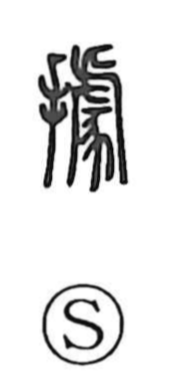

拠

Uncategorized
Kun: yoru, shimeru | On: kyo, ko
to rely on ・ to base on ・ grounds ・ to occupy ・ to hold
Explanation
Originally written as 據, this is a phono-semantic character: the hand element 扌 shows the act of placing one’s weight or grasping, while the phonetic element read kyo points to the sound. Early glosses describe it as “holding a cane,” conjuring the image of leaning the body on a support. Shirakawa further notes the association of kyo with the firm metal staple of a hanging bell (鐻), reinforcing the idea of a secure, reliable point of support. From this image of the hand finding a place to lean, the character comes to mean to rely on something, to make it a basis or grounds, and by extension to occupy or hold a position.